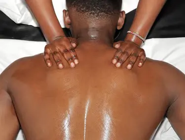

That electric zing down the back of your leg. The dull ache in your low back that never quite fades. The numbness or tingling that makes sitting uncomfortable. If you live in Bellevue, Seattle, or anywhere in King County and you've experienced these sensations, you might have searched online for "sciatica relief massage Bellevue". While true sciatica is a medical condition (often caused by a herniated disc, spinal stenosis, or other nerve compression), many people experience sciatica‑like symptoms from tight muscles, especially the piriformis. Massage may help with muscular contributors, but it is not a replacement for medical care.
At Lazizi® Wellness, we take a safe, non‑invasive approach to sciatica massage in Bellevue. We do not claim to treat or cure sciatica. Instead, we work on the surrounding muscles – low back, glutes, hips, and hamstrings – to reduce tension that may be compressing or irritating the sciatic nerve. This guide explains when massage might be appropriate, what to expect, and when to see a doctor first.

What Is Sciatica – And What Isn't?
True sciatica refers to pain, numbness, or weakness along the path of the sciatic nerve (from the lower back, through the buttock, and down the leg). Common causes include:
- Lumbar herniated disc
- Lumbar spinal stenosis
- Degenerative disc disease
- Piriformis syndrome (tight piriformis muscle compressing the nerve – not true "sciatica" but similar symptoms)
Massage may be helpful for piriformis syndrome and for the muscle tension that accompanies disc issues only after you have received a proper diagnosis and clearance from a physician or physical therapist. Massage will not fix a herniated disc or bone spur. If you have not seen a doctor for your symptoms, do that first.
How Sciatica Massage Helps (When Appropriate)
For clients with medical clearance, sciatica relief massage in Bellevue can address:
- Piriformis tightness – the piriformis muscle runs directly over the sciatic nerve. When it becomes short and tight, it can compress the nerve.
- Lower back muscle tension – the quadratus lumborum, erector spinae, and multifidus can all refer pain and contribute to poor mechanics.
- Gluteal muscle knots – trigger points in the gluteus medius and minimus can mimic sciatic pain.
- Hamstring tightness – can pull on the pelvis and worsen lower back issues.
- Stress and muscle guarding – chronic pain leads to further tension, creating a feedback loop.
Techniques include deep tissue work on the glutes and hips (with client permission and within pain tolerance), myofascial release, and gentle stretching. We never work on acutely inflamed areas without medical approval.
When to Avoid Sciatica Massage
Do not seek massage for sciatica‑like symptoms if you have:
- Sudden, severe lower back or leg pain that started after a fall or injury
- Loss of bladder or bowel control (cauda equina syndrome – emergency)
- Progressive weakness in your leg (e.g., foot drop)
- Numbness in the "saddle area" (inner thighs, groin, buttocks)
- Fever, unexplained weight loss, or other systemic symptoms
- A known herniated disc or spinal stenosis without doctor clearance
- Active cancer, infection, or blood clot concerns
If you have any of these, see a doctor or go to an emergency room immediately. Massage would be unsafe.
What to Expect in a Sciatica‑Focused Massage Session
After you have medical clearance, a session may include:
- Intake: We review your diagnosis (if any), imaging results, doctor's recommendations, current symptoms, and any contraindications.
- Positioning: We use side‑lying or face‑down with pillows to take pressure off the lower back.
- Work on glutes and piriformis: Using elbow, forearm, or specialized tools – always pressure you can tolerate.
- Lower back and hip flexor release: Light to moderate pressure on the quadratus lumborum and iliopsoas.
- Hamstring and calf work: To reduce tension along the entire posterior chain.
- Gentle stretching: Assisted piriformis stretch, knee‑to‑chest (if comfortable).
Do not expect a cure. Many clients report temporary relief and better mobility, but underlying disc or joint issues require ongoing medical management.
Self‑Care for Sciatica‑Like Symptoms (Between Sessions)
- Stay active within pain limits: Walking often helps – avoid bed rest.
- Use a heating pad or ice pack: 15 minutes, several times a day.
- Gentle piriformis stretch: Lying on back, cross one ankle over the opposite knee, pull the thigh toward you – hold 30 seconds.
- Avoid prolonged sitting: Stand and walk every 30 minutes.
- Improve ergonomics: Use a lumbar roll in your chair.
- Strengthen core and glutes: After acute pain subsides, bridges, clamshells, and bird‑dogs (with PT guidance).
Mobile Massage for Lower Back & Glute Tension in Bellevue
When you're in pain, driving to a studio can be miserable. Our mobile sciatica massage in Bellevue brings the table to your home – in Bellevue, Seattle, Redmond, Kirkland, or anywhere in King County. You can relax, rest afterward, and avoid the stress of travel.
We require a signed intake form and, if you have a known spinal condition, we may ask for written clearance from your healthcare provider. Your safety is our priority.
Explore our clinical massage services for lower back and glute tension in King County. For at‑home convenience, mobile massage for Bellevue, Seattle and the Eastside is available.
Relieve your lower back & glute tension safely
Book a professional sciatica relief massage session with proper medical clearance. Mobile appointments available in Bellevue & Seattle.
Book Your Session →Frequently Asked Questions – Sciatica & Massage
Can massage help with sciatica pain in Bellevue?
Massage can reduce tension in the lower back, glutes, and piriformis muscles, which may ease pressure on the sciatic nerve for temporary relief of muscle‑related sciatica symptoms. It is not a cure for true sciatica caused by herniated discs or spinal stenosis. Always consult a doctor first for an accurate diagnosis.
What type of massage is best for sciatica symptoms?
Deep tissue work on glutes and lower back (especially the piriformis), Swedish relaxation, and myofascial release for hips and thighs are commonly used. The best approach depends on your specific symptoms and medical clearance from your healthcare provider.
Do you offer mobile massage in Bellevue for lower back pain?
Yes. Lazizi Wellness provides mobile massage in Bellevue, Seattle, Redmond, Kirkland, and King County. We bring the table to your home, making it easier to receive care without the stress of driving when you're in pain.
When should I see a doctor instead of a massage therapist for sciatica?
If you have sudden severe pain, leg weakness, numbness, loss of bladder or bowel control, pain after a fall or injury, or symptoms that don't improve with rest, see a doctor immediately. Massage should never delay medical evaluation for serious conditions.
This information is for educational purposes and does not constitute medical advice. Sciatica‑like symptoms can be caused by serious conditions. Always consult a qualified healthcare provider before seeking massage for lower back or leg pain.